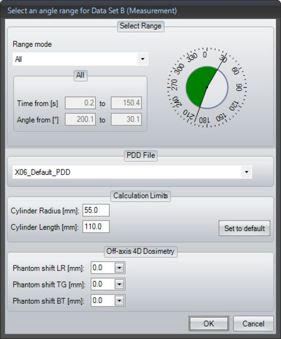

Note on Irradiation Procedures with Rotation Unit Not Positioned at the Isocenter
- If you want to calculate a dose volume for irradiation of a rotation unit not positioned at the isocenter, in menu Tools → Options on the 4D Dosimetry tab, select the Off-axis 4D dosimetry option in the Non-Standard 4D Dosimetry pane first (refer to section Settings for 4D Dosimetry).
- In the Select an angle range dialog, you will then see the Off-axis 4D dosimetry pane:

Select an angle range dialog for calculation of an OCTAVIUS 4D dose volume for irradiation of a rotation unit that is not positioned at the isocenter
- In the Off-axis 4D Dosimetry pane, enter the shift values of the rotation unit in millimeters with one decimal place for the following directions.
- LR = Left-Right direction - TG = Target-Gun direction - BT = Bottom-Top direction - Input ranges:
- accessory Rotation Unit with all OCTAVIUS detectors: - all directions
- accessory Rotation Unit SRS with OCTAVIUS detector 729 and 1500: - TG direction
- LR and BT direction
- accessory Rotation Unit SRS with OCTAVIUS Detector 1000 SRS: - all directions
(0 … ± 250) mm | |
(0 … ± 120) mm | |
(0 … ± 250) mm | |
(0 … ± 250) mm | |
When entering these values, refer to the definition of the coordinate system in the standard IEC 61217 and the following illustration.

- On the basis of the measurement data and the shift values, VeriSoft will calculate the dose volume for irradiation of a rotation unit not positioned at the isocenter.
The zero point of the dose values displayed in VeriSoft is the isocenter.
If 0 is entered for each shift value, an OCTAVIUS 4D dose volume will be calculated for irradiation of a rotation unit positioned at the isocenter.
Hint
For further information on performing measurements with irradiation of a rotation unit not positioned at the isocenter and on loading these measurements, please refer to the Technical Note D913.200.12 published by PTW.